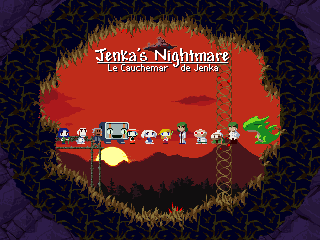

Guide - Jenka's Nightmare

[ Guide Version 1.1 FR ] [ 12 Mars, 2023 ]
- :: Table des Matières ::
- Introduction
- Pas à pas
- Beginning Anew
- Mimiga Plumbing
- The Windy Bush
- The Teleporter Maze
- Labyrinth's Labyrinth
- Genesis's Aqueduct
- Oblivion's Facility
- Aftermath
- Corridor to the Moon
- The Devil's Playground
- Gauntlet: Plantation
- Resolution
- The End
- Zones de la cartes
- First Cave Area
- Mimiga Village Area
- Pipeworks Area
- Grasstown Area
- Grasstown
- Grasstown Residence
- Grasstown Tower
- Teleporter Room
- Generator Room
- Save Room
- Old Storehouse
- Underside Area
- Sand Zone Area
- Labyrinth Area
- Old Clinic
- Labyrinth W
- Labyrinth S
- Save Room
- Labyrinth Shop
- Labyrinth M
- Dead End
- Labyrinth C
- Revolutionarium
- Aqueduct Area
- Facility Area
- Egg Corridor Area
- Egg Corridor
- Cthulhu's Abode?
- Egg Corridor (Back)
- Egg Observation Room?
- Side Room
- Egg 00
- Outer Wall
- Clock Room
- Once-Sacred Area
- Plantation Area
- Unknown Area
- Collectibles
- Life Capsules
- NG+ Life Capsules
- Missile Launcher Ammo
- Snake Ammo
- Bubbler Ammo
- Machine Gun Ammo
- Life Pot
- Secrets